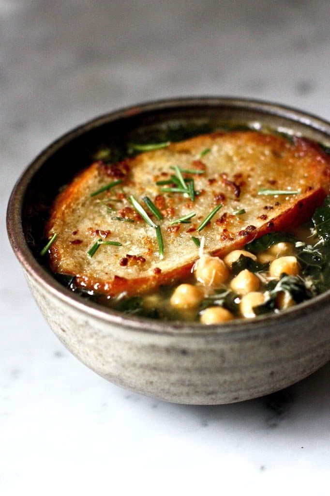

World´s Best Pancakes
This vegan pancake recipe is the best of the vegan lot. The secret that these pancakes are not soggy like the other vegans ones is that, it uses custard powder.
This ensures the pancakes are cake like and taste and look exactly like non-vegan pancakes. Mix fruit or chocolate chips into the batter if you like. Serve hot with syrup, fresh fruits or jam.
Ingredients
- 4 cups self-rising flour
- 1 tablespoon white sugar
- 1 tablespoon custard powder
- 2 cups soy milk
Directions
- In a large bowl, stir together the flour, sugar and custard powder. Mix in the soy milk with a whisk so there are no lumps.
- Heat a griddle over medium heat, and coat with nonstick cooking spray. Spoon batter onto the surface, and cook until bubbles begin to form on the surface.
Flip with a spatula and cook on the other side until golden. - Take to a serving plate and garnish with fruits and other toppings you like. Bon appétit!
Click for the Vegan pancakes recipe and more
Homemade Pita Bread
This pita bread recipe is superior to the stuff you get at the grocery store; it's not even close.
In addition to being delicious to eat, it's also extremely easy to make!

Ingredients
- 1 (.25 ounce) package active dry yeast
- 1 cup warm water (32 to 38 degrees C)
- 1 cup all-purpose flour
- 1 ½ tablespoons olive oil
- 1 ¾ teaspoons salt
- 1 ¾ cups all-purpose flour, or more as needed
- 1 teaspoon olive oil, divided
Directions
- Place yeast in the bowl of a stand mixer and add 1 cup warm water and 1 cup flour. Whisk together, then let sit until mixture bubbles and foams, 15 to 20 minutes.
- Add 1 1/2 tablespoons olive oil and salt into the yeast mixture, followed by 1 3/4 cups flour.
Mix at low speed, using a dough hook attachment, until dough is soft, supple, and slightly sticky.
If dough sticks to the sides of the bowl, add up to 1/4 cup more flour, a little at a time. - Knead dough with machine on low speed until slightly springy and still soft, 5 to 6 minutes.
Turn dough out onto a floured work surface and form into a ball.
Wipe inside of bowl with 1/4 teaspoon olive oil. Turn dough around in bowl to cover with a thin film of oil;
cover bowl with foil and let sit until dough has doubled in size, about 2 hours. - Remove dough from bowl and place onto a floured work surface. Lightly pat into a flat shape about 1-inch thick. Use a knife to cut dough into 8 equal pieces.
Form each piece into a small round ball with a smooth top, pulling dough from the sides and tucking the ends underneath the bottom. - Transfer the dough balls to a lightly floured work surface and sprinkle the tops with flour.
One at a time, gently pat the dough with your fingers, forming a flat, round bread about 1/4-inch thick. Let the shaped dough rest for 5 minutes. - Brush a cast iron skillet with remaining 3/4 teaspoon olive oil and place over medium-high heat.
Lay dough into the hot skillet; cook until puffy and the bottom has brown spots and blisters, about 3 minutes. - Flip, cook 2 more minutes, and flip back onto original side to cook for about 30 more seconds.
Pita bread will begin to puff up and fill with hot air. - Stack cooked breads on a plate; when cool enough to handle,
slice breads in half and open the pocket inside for stuffing. Enjoy them warm!
Click for the Homemade Pita recipe and more!
Kale and chickpea Soup
A warm savory soup winter soup. Totally quick and easy, and super healthy to boot! Add more kale if you don't have picky eaters!
Four cups of kale and curry is on the mild side, you can always add more to your taste. You can also add isot pepper flakes for the extra spiciness. Enjoy!

Ingredients
- 2 tablespoons butter
- 1 teaspoon minced garlic
- 1 medium minced onion
- 1 quart vegetable broth, divided
- 4 cups chopped kale leaves
- 1 (15 ounce) can chickpeas (garbanzo beans), drained and rinsed
- 1 cube vegetable bouillon
- ¼ teaspoon curry powder
- 1 cup oat milk
- Salt and pepper to taste
Directions
- Melt the butter in a deep pan. Place over medium heat. Cook and stir garlic in the stockpot until lightly browned, 2 to 3 minutes.
Add onion and about 2 tablespoons vegetable broth to garlic; cook and stir until onion is translucent, 5 to 10 minutes. - Stir kale into onion mixture; cook until slightly wilted, 3 to 4 minutes. Add chickpeas, remaining vegetable broth, vegetable bouillon, and curry powder;
bring to a boil. Reduce heat and simmer until heated through, about 15 minutes. Add oat milk and cook until heated through, 2 to 3 minutes.
Click for the Kale and Chickpea Soup recipe and more!